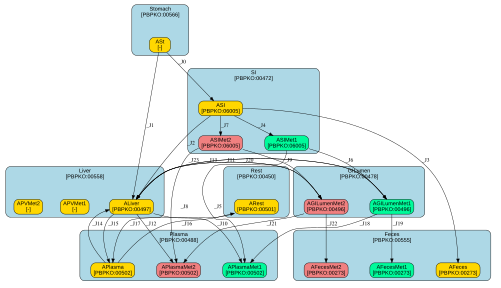

Yang
Notes
BPA PBPK (Yang et al. 2015) Human PBK for oral absorption administration -> Stomach -> SI -> liver <- GI Lumen Metabolism Parent only, perfusion-limited tissues GI Lumen Metabolism BAPG -> BAP Hepatic Metabolism BAP -> BAPG and BAPS EHR of BAPG from liver to GI Lumen, hydrolyzed to BAP, EHR of hydrolyzed BAPG to liver
Creators
not specified
Overview
| key | value |
|---|---|
| Modelled species/orgamism(s) | http://purl.obolibrary.org/obo/NCBITaxon_9606 |
| Model chemical(s) | http://purl.obolibrary.org/obo/CHEBI_33216 |
| Input route(s) | no routes detected |
| Time resolution | h |
| Amounts unit | nmol |
| Volume unit | L |
| Number of compartments | 7 |
| Number of species | 19 |
| Number of parameters | 60 (33 external / 27 internal) |
Diagram

Compartments
| id | name | unit | model qualifier |
|---|---|---|---|
| Stomach | stomach | L | http://purl.obolibrary.org/obo/PBPKO_00566 |
| SI | Small intestine compartment | L | http://purl.obolibrary.org/obo/PBPKO_00472 |
| Liver | liver | L | http://purl.obolibrary.org/obo/PBPKO_00558 |
| Plasma | blood plasma | L | http://purl.obolibrary.org/obo/PBPKO_00488 |
| Rest | rest-of-body | L | http://purl.obolibrary.org/obo/PBPKO_00450 |
| GILumen | GI lumen compartment | L | http://purl.obolibrary.org/obo/PBPKO_00478 |
| Feces | feces | L | http://purl.obolibrary.org/obo/PBPKO_00555 |
Species
| id | name | unit | model qualifier |
|---|---|---|---|
| ASt | not specified | not specified | not specified |
| ASI | Amount in small intestine | nmol | not specified |
| ALiver | amount of chemical in liver | nmol | http://purl.obolibrary.org/obo/PBPKO_00497 |
| APlasma | amount of chemical in plasma | nmol | http://purl.obolibrary.org/obo/PBPKO_00502 |
| ARest | amount of chemical in rest-of-body | nmol | http://purl.obolibrary.org/obo/PBPKO_00501 |
| AGILumen | Amount in GI lumen | nmol | http://purl.obolibrary.org/obo/PBPKO_00496 |
| AFeces | Amount in feces | nmol | http://purl.obolibrary.org/obo/PBPKO_00273 |
| ASIMet1 | Amount of metabolite in small intestine | nmol | not specified |
| ASIMet2 | Amount of metabolite in small intestine | nmol | not specified |
| ALiverMet1 | Amount of metabolite in liver | nmol | http://purl.obolibrary.org/obo/PBPKO_00497 |
| ALiverMet2 | Amount of metabolite in liver | nmol | http://purl.obolibrary.org/obo/PBPKO_00497 |
| APVMet1 | Amount of metabolite in portal vein | nmol | not specified |
| APVMet2 | Amount of metabolite in portal vein | nmol | not specified |
| AGILumenMet1 | Amount of metabolite in GI lumen | nmol | not specified |
| AGILumenMet2 | Amount of metabolite in GI lumen | nmol | not specified |
| APlasmaMet1 | Amount of metabolite in plasma | nmol | http://purl.obolibrary.org/obo/PBPKO_00502 |
| APlasmaMet2 | AMount of metabolite in plasma | nmol | http://purl.obolibrary.org/obo/PBPKO_00502 |
| AFecesMet1 | Amount of metabolite in feces | nmol | http://purl.obolibrary.org/obo/PBPKO_00273 |
| AFecesMet2 | Amount of metabolite in feces | nmol | http://purl.obolibrary.org/obo/PBPKO_00273 |
Transfer equations
| id | from | to | equation |
|---|---|---|---|
| _J0 | ASt | ASI | ksto * ASt |
| _J1 | ASt | ALiver | k0 * ASt |
| _J2 | ASI | ALiver | kabs * ASI |
| _J3 | ASI | AFeces | kfe * ASI |
| _J4 | ASI | ASIMet1 | VmaxGILumenMet1 * CGut / (KmGILumenMet1 + CGut) |
| _J5 | ASIMet1 | APVMet1 | kabsMet1 * ASIMet1 |
| _J6 | APVMet1 | APlasmaMet1 | (1 - BileFracSIMet1) * APVMet1 |
| _J7 | APVMet1 | AGILumenMet1 | BileFracSIMet1 * APVMet1 |
| _J8 | ASI | ASIMet2 | VmaxGILumenMet2 * CGut / (KmGILumenMet2 + CGut) |
| _J9 | ASIMet2 | APVMet2 | kabsMet2 * ASIMet2 |
| _J10 | APVMet2 | APlasmaMet2 | (1 - BileFracSIMet2) * APVMet2 |
| _J11 | APVMet2 | AGILumenMet2 | BileFracSIMet2 * APVMet2 |
| _J12 | ALiver | ALiverMet1 | VmaxLMet1 * (CLiver / PL) / (KmLMet1 + CLiver / PL) |
| _J13 | ALiverMet1 | APlasmaMet1 | (1 - BileFracLMet1) * ALiverMet1 |
| _J14 | ALiverMet1 | AGILumenMet1 | BileFracLMet1 * ALiverMet1 |
| _J15 | ALiver | ALiverMet2 | VmaxLMet2 * (CLiver / PL) / (KmLMet2 + CLiver / PL) |
| _J16 | ALiverMet2 | APlasmaMet2 | (1 - BileFracLMet2) * ALiverMet2 |
| _J17 | ALiverMet2 | AGILumenMet2 | BileFracLMet2 * ALiverMet2 |
| _J18 | APlasma | ALiver | QL * CPlasma |
| _J19 | ALiver | APlasma | QL * (CLiver / PL) |
| _J20 | APlasma | ARest | QRest * CPlasma |
| _J21 | ARest | APlasma | QRest * (CRest / PRest) |
| _J22 | AGILumenMet1 | APlasmaMet1 | AGILumenMet1 * EHRrate |
| _J23 | AGILumenMet1 | AFecesMet1 | AGILumenMet1 * kfeMet1 |
| _J24 | AGILumenMet1 | ALiver | AGILumenMet1 * kehrMet1 |
| _J25 | AGILumenMet2 | APlasmaMet2 | AGILumenMet2 * EHRrate |
| _J26 | AGILumenMet2 | AFecesMet2 | AGILumenMet2 * kfeMet1 |
| _J27 | AGILumenMet2 | ALiver | AGILumenMet2 * kehrMet2 |
ODEs
\(\frac{d[\mathtt{ASt}]}{dt} = - \mathit{ksto}\cdot \mathit{ASt} - \mathit{k0}\cdot \mathit{ASt}\)
\(\frac{d[\mathtt{ASI}]}{dt} = \mathit{ksto}\cdot \mathit{ASt} - \mathit{kabs}\cdot \mathit{ASI} - \mathit{kfe}\cdot \mathit{ASI} - \frac{\mathit{VmaxGILumenMet1}\cdot \mathit{CGut}}{\mathit{KmGILumenMet1}+\mathit{CGut}} - \frac{\mathit{VmaxGILumenMet2}\cdot \mathit{CGut}}{\mathit{KmGILumenMet2}+\mathit{CGut}}\)
\(\frac{d[\mathtt{ALiver}]}{dt} = \mathit{k0}\cdot \mathit{ASt} + \mathit{kabs}\cdot \mathit{ASI} - \frac{\mathit{VmaxLMet1}\cdot \frac{\mathit{CLiver}}{\mathit{PL}}}{\mathit{KmLMet1}+\frac{\mathit{CLiver}}{\mathit{PL}}} - \frac{\mathit{VmaxLMet2}\cdot \frac{\mathit{CLiver}}{\mathit{PL}}}{\mathit{KmLMet2}+\frac{\mathit{CLiver}}{\mathit{PL}}} + \mathit{QL}\cdot \mathit{CPlasma} - \mathit{QL}\cdot \frac{\mathit{CLiver}}{\mathit{PL}} + \mathit{AGILumenMet1}\cdot \mathit{kehrMet1} + \mathit{AGILumenMet2}\cdot \mathit{kehrMet2}\)
\(\frac{d[\mathtt{APlasma}]}{dt} = - \mathit{QL}\cdot \mathit{CPlasma} + \mathit{QL}\cdot \frac{\mathit{CLiver}}{\mathit{PL}} - \mathit{QRest}\cdot \mathit{CPlasma} + \mathit{QRest}\cdot \frac{\mathit{CRest}}{\mathit{PRest}}\)
\(\frac{d[\mathtt{ARest}]}{dt} = \mathit{QRest}\cdot \mathit{CPlasma} - \mathit{QRest}\cdot \frac{\mathit{CRest}}{\mathit{PRest}}\)
\(\frac{d[\mathtt{AFeces}]}{dt} = \mathit{kfe}\cdot \mathit{ASI}\)
\(\frac{d[\mathtt{ASIMet1}]}{dt} = \frac{\mathit{VmaxGILumenMet1}\cdot \mathit{CGut}}{\mathit{KmGILumenMet1}+\mathit{CGut}} - \mathit{kabsMet1}\cdot \mathit{ASIMet1}\)
\(\frac{d[\mathtt{ASIMet2}]}{dt} = \frac{\mathit{VmaxGILumenMet2}\cdot \mathit{CGut}}{\mathit{KmGILumenMet2}+\mathit{CGut}} - \mathit{kabsMet2}\cdot \mathit{ASIMet2}\)
\(\frac{d[\mathtt{ALiverMet1}]}{dt} = \frac{\mathit{VmaxLMet1}\cdot \frac{\mathit{CLiver}}{\mathit{PL}}}{\mathit{KmLMet1}+\frac{\mathit{CLiver}}{\mathit{PL}}} - (1-\mathit{BileFracLMet1})\cdot \mathit{ALiverMet1} - \mathit{BileFracLMet1}\cdot \mathit{ALiverMet1}\)
\(\frac{d[\mathtt{ALiverMet2}]}{dt} = \frac{\mathit{VmaxLMet2}\cdot \frac{\mathit{CLiver}}{\mathit{PL}}}{\mathit{KmLMet2}+\frac{\mathit{CLiver}}{\mathit{PL}}} - (1-\mathit{BileFracLMet2})\cdot \mathit{ALiverMet2} - \mathit{BileFracLMet2}\cdot \mathit{ALiverMet2}\)
\(\frac{d[\mathtt{APVMet1}]}{dt} = \mathit{kabsMet1}\cdot \mathit{ASIMet1} - (1-\mathit{BileFracSIMet1})\cdot \mathit{APVMet1} - \mathit{BileFracSIMet1}\cdot \mathit{APVMet1}\)
\(\frac{d[\mathtt{APVMet2}]}{dt} = \mathit{kabsMet2}\cdot \mathit{ASIMet2} - (1-\mathit{BileFracSIMet2})\cdot \mathit{APVMet2} - \mathit{BileFracSIMet2}\cdot \mathit{APVMet2}\)
\(\frac{d[\mathtt{AGILumenMet1}]}{dt} = \mathit{BileFracSIMet1}\cdot \mathit{APVMet1} + \mathit{BileFracLMet1}\cdot \mathit{ALiverMet1} - \mathit{AGILumenMet1}\cdot \mathit{EHRrate} - \mathit{AGILumenMet1}\cdot \mathit{kfeMet1} - \mathit{AGILumenMet1}\cdot \mathit{kehrMet1}\)
\(\frac{d[\mathtt{AGILumenMet2}]}{dt} = \mathit{BileFracSIMet2}\cdot \mathit{APVMet2} + \mathit{BileFracLMet2}\cdot \mathit{ALiverMet2} - \mathit{AGILumenMet2}\cdot \mathit{EHRrate} - \mathit{AGILumenMet2}\cdot \mathit{kfeMet1} - \mathit{AGILumenMet2}\cdot \mathit{kehrMet2}\)
\(\frac{d[\mathtt{APlasmaMet1}]}{dt} = (1-\mathit{BileFracSIMet1})\cdot \mathit{APVMet1} + (1-\mathit{BileFracLMet1})\cdot \mathit{ALiverMet1} + \mathit{AGILumenMet1}\cdot \mathit{EHRrate}\)
\(\frac{d[\mathtt{APlasmaMet2}]}{dt} = (1-\mathit{BileFracSIMet2})\cdot \mathit{APVMet2} + (1-\mathit{BileFracLMet2})\cdot \mathit{ALiverMet2} + \mathit{AGILumenMet2}\cdot \mathit{EHRrate}\)
\(\frac{d[\mathtt{AFecesMet1}]}{dt} = \mathit{AGILumenMet1}\cdot \mathit{kfeMet1}\)
\(\frac{d[\mathtt{AFecesMet2}]}{dt} = \mathit{AGILumenMet2}\cdot \mathit{kfeMet1}\)
Assignment rules
| variable | assignment |
|---|---|
| VL | VLc * BW |
| VPlasma | VPlasmac * BW |
| VRest | BW - VL - VPlasma |
| QC | 15.87 * pow(BW, 0.75) |
| QL | QLc * QC |
| QRest | QC - QL |
| ksto | kstoC / pow(BW, 0.25) |
| k0 | k0C / pow(BW, 0.25) |
| kabs | kabsC / pow(BW, 0.25) |
| kfe | kfeC / pow(BW, 0.25) |
| kfeMet1 | kfeMet1C / pow(BW, 0.25) |
| kabsMet1 | kabsMet1C / pow(BW, 0.25) |
| kabsMet2 | kabsMet2C / pow(BW, 0.25) |
| EHRrate | EHRrateC / pow(BW, 0.25) |
| kehrMet1 | kehrMet1C / pow(BW, 0.25) |
| kehrMet2 | kehrMet2C / pow(BW, 0.25) |
| VmaxGILumenMet1 | fGutMet1 * VmaxGILumenMet1c * pow(BW, 0.75) |
| VmaxGILumenMet2 | fGutMet2 * VmaxGILumenMet2c * pow(BW, 0.75) |
| VmaxLMet1 | fLiverMet1 * VmaxLMet1c * pow(BW, 0.75) |
| VmaxLMet2 | fLiverMet2 * pow(BW, 0.75) * VmaxLMet2c |
| CSt | ASt / Stomach |
| CSI | ASI / SI |
| CLiver | ALiver / Liver |
| CPlasma | APlasma / Plasma |
| CRest | ARest / Rest |
| ABile | AGILumen / GILumen |
| CGut | ASI / enterocytes |
Initial assignments
| variable | assignment |
|---|---|
| Liver | VL |
| Plasma | VPlasma |
| Rest | VRest |
Parameters
| id | name | unit | model qualifier |
|---|---|---|---|
| BW | body weight | kg | http://purl.obolibrary.org/obo/PBPKO_00008 |
| VLc | Volume fraction to bodyweight - liver | L/kg | http://purl.obolibrary.org/obo/PBPKO_00078 |
| VPlasmac | Volume fraction to bodyweight - Plasma | L/kg | http://purl.obolibrary.org/obo/PBPKO_00104 |
| VL | Volume of liver | L | http://purl.obolibrary.org/obo/PBPKO_00077 |
| VPlasma | Volume of plasma | L | http://purl.obolibrary.org/obo/PBPKO_00103 |
| VRest | Volume of rest of body | L | http://purl.obolibrary.org/obo/PBPKO_00105 |
| enterocytes | Small intestine enterocyte processing volume | L | not specified |
| QC | Cardiac output | L/h | http://purl.obolibrary.org/obo/PBPKO_00013 |
| QLc | Fraction of blood to liver | dimensionless | http://purl.obolibrary.org/obo/PBPKO_00025 |
| QL | Blood flow to liver | L/h | http://purl.obolibrary.org/obo/PBPKO_00024 |
| QRest | Blood flow to rest of body | L/h | http://purl.obolibrary.org/obo/PBPKO_00050 |
| PL | Partition coefficient - liver | dimensionless | http://purl.obolibrary.org/obo/PBPKO_00577 |
| PRest | Partition coefficient - rest of body | dimensionless | http://purl.obolibrary.org/obo/PBPKO_00585 |
| kstoC | Gastric emptying constant | not specified | not specified |
| ksto | Gastric emptying rate | /h | http://purl.obolibrary.org/obo/PBPKO_00143 |
| k0C | Uptake from stomach to liver constant | not specified | not specified |
| k0 | Uptake rate from stomach to liver | /h | not specified |
| kabsC | Uptake from enterocytes to liver | not specified | not specified |
| kabs | Uptake rate from enterocytes to liver | /h | not specified |
| kfeC | Fecal elimination constant | not specified | http://purl.obolibrary.org/obo/PBPKO_00236 |
| kfe | Fecal elimination rate | /h | http://purl.obolibrary.org/obo/PBPKO_00230 |
| kfeMet1C | Fecal elimination constant | not specified | http://purl.obolibrary.org/obo/PBPKO_00236 |
| kfeMet1 | Fecal elimination rate | /h | http://purl.obolibrary.org/obo/PBPKO_00230 |
| kabsMet1C | Transport constant of metabolite from enterocytes to serum | not specified | not specified |
| kabsMet1 | Transport rate of metabolite from enterocytes to serum | /h | not specified |
| kabsMet2C | Transport constant of metabolite from enterocytes to serum | not specified | not specified |
| kabsMet2 | Transport rate of metabolite from enterocytes to serum | /h | not specified |
| EHRrateC | Enterohepatic recirculation constant of metabolite | not specified | not specified |
| EHRrate | Enterohepatic recirculation rate of metabolite | /h | not specified |
| kehrMet1C | EHR constant of metabolite due to biliary excretion | not specified | not specified |
| kehrMet1 | EHR rate of metabolite due to biliary excretion | not specified | not specified |
| kehrMet2C | EHR constant of metabolite due to biliary excretion | not specified | not specified |
| kehrMet2 | EHR rate of metabolite due to biliary excretion | not specified | not specified |
| BileFracSIMet1 | % of metabolite that goes to bile | dimensionless | not specified |
| BileFracSIMet2 | % of metabolite that goes to bile | dimensionless | not specified |
| fGutMet1 | correction factor | dimensionless | not specified |
| KmGILumenMet1 | Glucuronidation Km | not specified | http://purl.obolibrary.org/obo/PBPKO_00212 |
| VmaxGILumenMet1c | Glucuronidation constant - Vmax | not specified | http://purl.obolibrary.org/obo/PBPKO_00212 |
| VmaxGILumenMet1 | Glucuronidation Vmax | not specified | http://purl.obolibrary.org/obo/PBPKO_00212 |
| fGutMet2 | correction fraction | dimensionless | not specified |
| KmGILumenMet2 | Sulfation - Km | not specified | http://purl.obolibrary.org/obo/PBPKO_00212 |
| VmaxGILumenMet2c | Sulfation constant - Vmax | not specified | http://purl.obolibrary.org/obo/PBPKO_00212 |
| VmaxGILumenMet2 | Sulfation - Vmax | not specified | http://purl.obolibrary.org/obo/PBPKO_00212 |
| BileFracLMet1 | % of metabolite that goes to bile | dimensionless | not specified |
| BileFracLMet2 | % of metabolite that goes to bile | dimensionless | not specified |
| fLiverMet1 | Switch on/off | dimensionless | not specified |
| KmLMet1 | Glucuronidation- Km | not specified | http://purl.obolibrary.org/obo/PBPKO_00214 |
| VmaxLMet1c | Glucuronidation constant - Vmax | not specified | http://purl.obolibrary.org/obo/PBPKO_00214 |
| VmaxLMet1 | Glucuronidation - Vmax | not specified | http://purl.obolibrary.org/obo/PBPKO_00214 |
| fLiverMet2 | Switch on/off | not specified | not specified |
| KmLMet2 | Sulfation - Km | not specified | http://purl.obolibrary.org/obo/PBPKO_00214 |
| VmaxLMet2c | Sulfation constant - Vmax | not specified | http://purl.obolibrary.org/obo/PBPKO_00214 |
| VmaxLMet2 | Sulfation - Vmax | not specified | http://purl.obolibrary.org/obo/PBPKO_00214 |
| CSt | Concentration in stomach | not specified | not specified |
| CSI | concentration in small intestine | not specified | not specified |
| CLiver | Concentration in liver | not specified | http://purl.obolibrary.org/obo/PBPKO_00539 |
| CPlasma | Concentration in plasma | not specified | http://purl.obolibrary.org/obo/PBPKO_00549 |
| CRest | Concentration in rest of body | not specified | http://purl.obolibrary.org/obo/PBPKO_00548 |
| ABile | Concentration in bile | not specified | not specified |
| CGut | Concentration in gut | not specified | http://purl.obolibrary.org/obo/PBPKO_00538 |